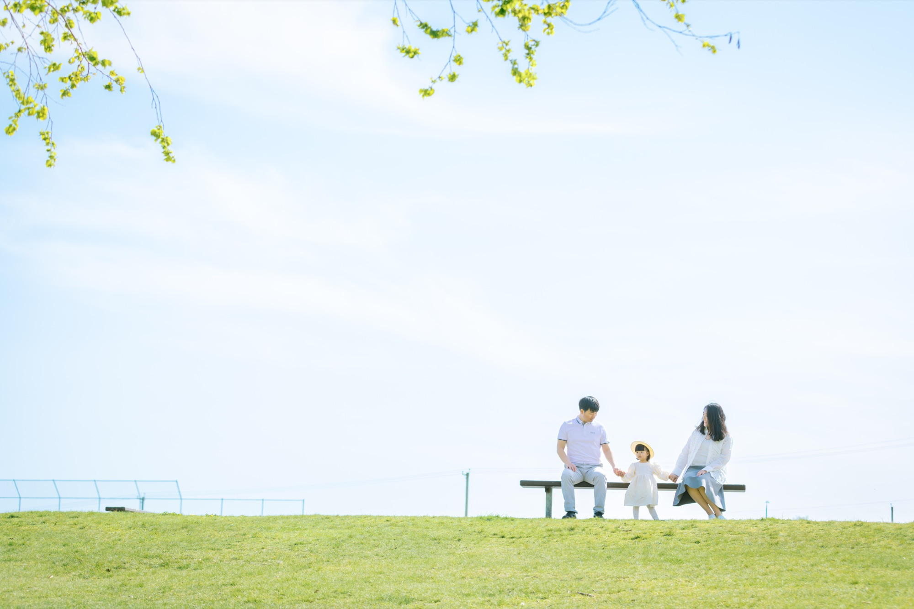

2025
Safe Learning in the Real World via Adaptive Shielding with Hamilton–Jacobi Reachability
Michael Lu, Jashanraj Gosain, Luna Sang, and Mo Chen. Learning for Dynamics and Control (L4DC), 2025.

Computing Science · MARS Lab
I study control theory and Hamilton–Jacobi reachability. My work explores learning-based and other computational methods for solving HJ problems.
About
I am a PhD student in Computing Science at Simon Fraser University and a member of the Multi-Agent Robotic Systems Lab (MARS Lab). I am interested in control theory and Hamilton–Jacobi reachability, with a focus on learning-based and other computational methods for solving HJ problems.
Beyond research, I love travel, skiing, photography, and looking for wild places - from quiet mountain mornings to starry skies and the northern lights.
Stay wild.→
Publications
Michael Lu, Jashanraj Gosain, Luna Sang, and Mo Chen. Learning for Dynamics and Control (L4DC), 2025.
Paige Irene Tuttosi, Mantaj Dhillon, Luna Sang, Shane Eastwood, Poorvi Bhatia, Quang Minh Dinh, Avni Kapoor, Yewon Jin, and Angelica Lim. Computer Speech & Language, 2025.
Contact
I welcome conversations about research, collaboration, and work at the intersection of learning and control.